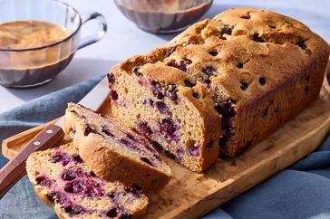

Home
Blueberry cake

Description
This cottage cheese blueberry breakfast cake is a lemony loaf cake studded with a full pint of fresh blueberries. It's a perfect not-too-sweet breakfast or snack cake.
Ingredients
- 3/4 cup plus 1 tablespoon all-purpose flour
- 1/2 teaspoon baking powder
- 1/2 teaspoon baking soda
- 1/4 teaspoon salt
- 1/2 cup cottage cheese
- 1/2 cup sugar
Steps
- Preheat oven to 350°F. Grease a 9x5-inch loaf pan.
- In a medium bowl, whisk together 3/4 cup flour, baking powder, baking soda, and salt.
- In a large bowl, whisk together cottage cheese, sugar, eggs, lemon zest, and lemon juice. Add dry ingredients and stir until just combined.
- In a small bowl, toss blueberries with remaining 1 tablespoon flour. Gently fold blueberries into batter.
- Pour batter into prepared pan and bake until a toothpick inserted into the center comes out clean, 45 to 50 minutes.